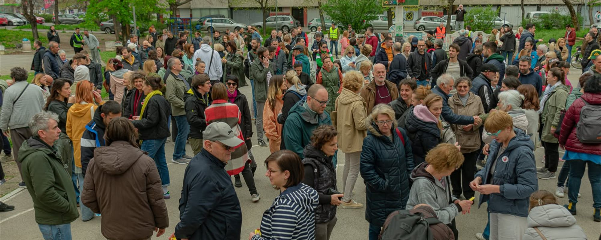

SLEDEĆI ZBOR GRAĐANA
Još nije zakazan
Poslednji zbor: 26. 10. 2025.
Zapisnik sa poslednjeg zboraNEZAVISNI SAJT GRAĐANA LIMANA 2
Vesti iz kraja, akcije, zapisnici zbora i prijave problema na jednom mestu, koje ne nestaje posle tri dana kao objava na Facebook-u.
SLEDEĆI ZBOR GRAĐANA
Još nije zakazan
Poslednji zbor: 26. 10. 2025.
Zapisnik sa poslednjeg zbora
Prvi zbor građana, 30. mart 2025, Bronx · fotografija sa zbora
30. 3. 2025. prvi zbor, Bronx
6 odluka sa prvog zbora
0 prijava u Komšijskom radaru
Zapisnici javni, za svaki zborZBOR GRAĐANA
Zbor građana je oblik neposredne demokratije: komšije se okupe, rasprave o bitnim pitanjima svoje mesne zajednice i same odluče - javno, uz otvorenu raspravu i bez skrivene agende.
Građani raspravljaju o lokalnim problemima i predlažu konkretna rešenja - o njima se glasa na licu mesta, a ne u kancelarijama.
Sve odluke se donose javno, uz otvorenu raspravu. Nema dogovora u četiri oka ni skrivene agende.
Okupljanje na zborovima jača solidarnost i osećaj zajedničke odgovornosti za kraj u kome živimo.
Građani preuzimaju kontrolu nad pitanjima koja ih se tiču, umesto da čekaju odluke "odozgo".
Kada se građani organizuju i zajednički odlučuju, njihov glas postaje jači i teže ga je ignorisati.
Pridruži se Zboru građana i budi deo promena. Zajedno gradimo pravedniju, transparentniju i snažniju zajednicu - jer naš glas treba da se čuje.
PRVI ZBOR GRAĐANA · 30. MART 2025.
Na prvom zboru MZ "Boško Buha" okupili su se građani Limana II sa zajedničkim ciljem: da se izbore za svoja prava i unaprede život u svojoj zajednici. Svaki glas se čuo, a odluke su donete transparentnim glasanjem - bez unapred pripremljenih zaključaka.
Zbor nije jednokratni protest: to je mesto gde se odluke donose, zapisuju i proveravaju. Zato su zapisnici javni - zapisnik sa petog zbora (26. 10. 2025) možeš pročitati ovde, a svi zapisnici stoje u spisku zapisnika.
Kad novi zbor bude zakazan, datum, vreme i dnevni red stajaće u kartici na vrhu strane.
KLJUČNE TEME I ODLUKE
FOTOGRAFIJE SA PRVOG ZBORA · 30. MART 2025.


Klik na fotografiju otvara veću verziju. Fotografije poslao Goran Stepančev.
Prijave komunalnih problema na mapi Limana 2 - rasveta, smeće, parking, zelenilo, ulice i trotoari. Za svaku prijavu se vidi status i koliko dugo čeka.
NAJPODRŽANIJE PRIJAVE
Ceo radar →Kad problem u kraju ne rešava nadležni, ovo su brojevi i adrese na koje komšije zovu: hitne službe, komunalna preduzeća i gradske uprave. Broj se zove jednim dodirom sa telefona, a adresa otvara poruku u programu za poštu. U Komšijskom radaru prijava ide direktno na izabranu ustanovu, sa kopijom Zboru.
Pozivaj sa bilo kog telefona, bez pozivnog broja grada.
Izvori: sajt Grada Novog Sada - strane "Važni telefoni" i gradske uprave (novisad.rs) - i sajtovi JKP: Čistoća, Vodovod i kanalizacija, Novosadska toplana, Parking servis, Gradsko zelenilo i JGSP. Ako se broj ili adresa promene, javi nam. Komunalni problem u kraju prvo prijavi kroz Komšijski radar - ako prijava već postoji, podrži je umesto da otvaraš novu.
VEST · [DATUM]
[Kratak uvod u vest, dve rečenice.]
Predloži je komšijama. Najpodržaniji predlozi idu na dnevni red Zbora građana.
NEKAD I SAD
Pre zgrada bile su bare, pesak i vrbe. Posle rata niklo je planirano naselje - a s njim Bronks, škola, pijaca i kej po kojima Liman 2 prepoznajemo. Pročitaj celu priču o kraju, uz fotografije iz arhive.